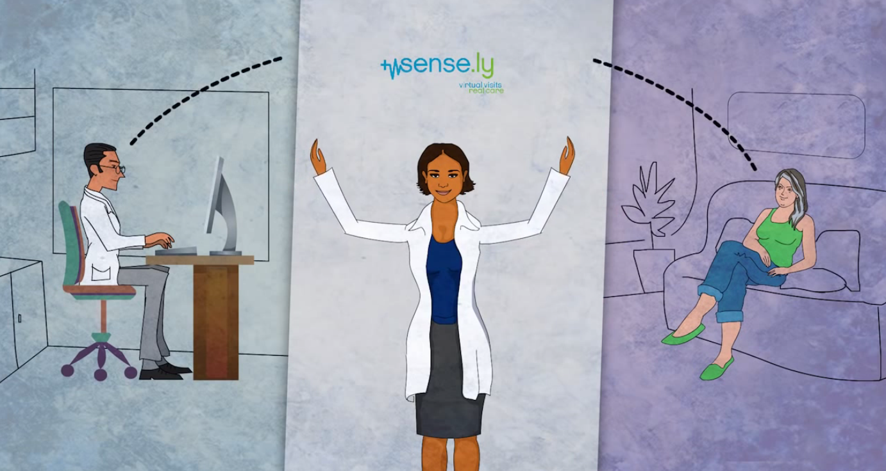

Sensely is world’s first virtual nurse providing monitoring and follow-up care, with a focus on chronic diseases. Sensely's reactive, avatar-based technology and telemedicine features that use intelligent analytics allow clinicians to make better decisions. Sensely's artificially intelligent nurse leads patients through their personal healthcare needs and collects information by listening to the patients and asking questions, as many clinicians would in a person-to-person interaction. [1]
How does MindMeld interact with Sensely?
MindMeld enables companies to construct AI-powered, intelligent voice interfaces for all applications and devices. MindMeld is reknowned world-wide as a leader in the voice-driven field in computing. Users are able to have their own intelligent, interactive virtual nurse by combining Sensely's telemedicine platform and MindMeld's AI.
Using Sensely, a patient can interact with a nurse avatar using simple voice commands and various health-related questions. MindMeld's AI technology is used to comprehend the questions that are asked and offer answers or applicable medical information. Patients using Sensely will be able to ask questions like, "I have a headache and I feel dizzy. What is the best thing I can do?” MindMeld will then understand the meaning of the question and determine what the patient might be experiencing. Through advanced language understanding technology, MindMeld can provide detailed information about possible conditions and where to turn to for help. [2]

What is VRN?
Sensely is equipped with a system named Virtual Remote Nursing (VRN). In Sensely, a generic software agent, virtual Nurse (vNurse), is installed on user’s device. The medical practitioner selects what the virtual nurse should do for each designated task and then the virtual nurse will fulfil the task. Therefore, the medical practitioner is the decision maker and the virtual nurse is the agent that carries out the task asked by the medical practitioner, while having complete access to the client’s health information from the Personal Health Record System (PHR). This system collects authentic health information from the patients. An increasing number of health devices can upload data to be collected by the PHR systems. Furthermore, the vNurse uses the PHR Application Programming Interfaces (APIs) to acquire its client health information.
How does VRN work?
Each medical guideline corresponds to some pattern in healthcare that can be boiled down to a decision or action. This means that every task allocated to the virtual nurse can be modelled by a sequence of steps called a medical workflow. A task for the vNurse can be defined as follows:
Task =< Schedule, Model, Knowledge, Data >
where the task schedule decides the execution time for the task, the task model lists the steps of a task via a medical workflow, the task knowledge consists of the corresponding medical guidelines for each step in the medical workflow and the task data is the data used by the medical guidelines during the task execution. The virtual nurse is modelled as a software agent wrapped into a web service. To apply medical guidelines, the vNurse considers each medical guideline as a business rule, medical workflows as business process models and task data as business objects. The components of the vNurse agent are as follows:
Input receives patients health information from the PHR system.
Output sends task results (suggestions, caution, reminder notifications) to the personal health application to be received by the client.
Tasks that are waiting to be selected for execution are stored in Task Queue. At first, tasks are stored into the task queue based on First-In First-Out (FIFO) strategy and their priority.
Knowledge Base stores received task knowledge to relieve the service caller from sending them each time.
Business Rule Engine executes a task.
Task manager controls the whole life cycle of a task.
Babylon uses the world's most advanced artificial intelligence software to provide an app-enabled, remote healthcare service. Users report the symptoms of their illness to the app which will then check these symptoms against a database of diseases using speech recognition. The app will then offer a medical AI consultation based on personal medical history and circumstances and offer a sensible course of action.
The app uses a network of databases covering a huge variety of illnesses and the system is able to analyse hundreds of millions of combinations in real-time while considering the user’s genetics, environment, history etc. Alternatively, doctors are able to read the app’s findings through a medical portal and set up consultations via text, phone or video chat. As well as offering medical advice, the app is also able to constantly monitor vital organs and signs of health, for example, kidneys, liver, bones and cholesterol levels, and Babylon also offers wearable devices to help monitor sleep and heart rate. [1]
How does Babylon work?
Babylon’s medical AI consultation works through a chatbot that uses a combination of technologies, including deep learning and semantic knowledge representation. The consultation aims to recreate the triage process, thereby reducing unnecessary hospital visits. Babylon have shown how the triage system (the so-called “babylon check”) can be modelled computationally and commercially deployed as follows. [2]p>
What is the Babylon check?
The computational model of traits can be described as a directed graph which links a variety of entities, such as questions, answers, triggers and outcomes. The graph includes explicit representation for outcomes to deal with red flag symptoms and is also capable of inference based on the weight symptoms reported by the patient. The triage can also be modelled as a sequence of trees where each root node is a question. As the user answers questions, they traverse the tree until a leaf-node is met which triggers a transition to the next tree. The triage session stops when all possible trees have been traversed. [3]
How are the questions asked by the chatbot formulated?
The questions asked by the chatbot are formulated in three main ways: to check for an occurrence of a particular event or incident in the patient’s history, to clarify certain symptoms, or to explore a previous response. Each question is associated with at least two answers and must be answered by the patient in order to proceed with the consultation. Answers may be associated with outcomes that may have a score that is added to the total score when the answer is selection. Answers may also have a ‘trigger’ which allows for more sophisticated logic. Triggers represent a logical AND gate and are activated if the patient selects enough of the relevant symptoms to indicate a ‘red-flag’ event. Triggers can be conditional on the overall score or on details of the patient, e.g. their age. The score at the beginning of the triage flow is initialised to zero, and score nodes within the graph will add or subtract points from the overall score. The higher the score, the higher the degree of ‘clinical worry’. [4] ↑
AiCure is a clinically validated artificial intelligence platform that visually confirms medication ingestion. This smartphone application was built to combat the problem of taking medications incorrectly or not taking them at all. In other words, it would help to check that the patient takes the correct medication at the right time, thereby attempting to reduce the $378 billion cost of people neglecting to take their prescribed medicine. [1]
How does AiCure work?
Using a mobile device’s camera, software algorithms analyse the identity of the patient and the medication from the camera, and verify intake or send an alert. Facial recognition and motion-sensing technology is used to check that a patient has accurately taken their medication. Thereby the actual activity of taking the medication is the check mark. This information will be sent to a cloud-based dashboard that researchers or medical individuals can use to observe and check adherence and pinpoint issues in real time. Immediate assistance can be offered to patients by providers through the dashboard. The application also provides interactive instructions, reminders and recommendations to patients to increase adherence to prescribed medicine.
One of the most difficult tasks in opioid substitution therapy is medication adherence and deficient retention. The use of the AiCure platform will considerably improve both adherence and patient retention as it monitors and intervenes in real-time. AiCure's technology has been approved against drug levels in blood samples. Its practicality also has been confirmed across very different patient populations, from elderly patients to researchers in HIV prevention trials. [2] ↑